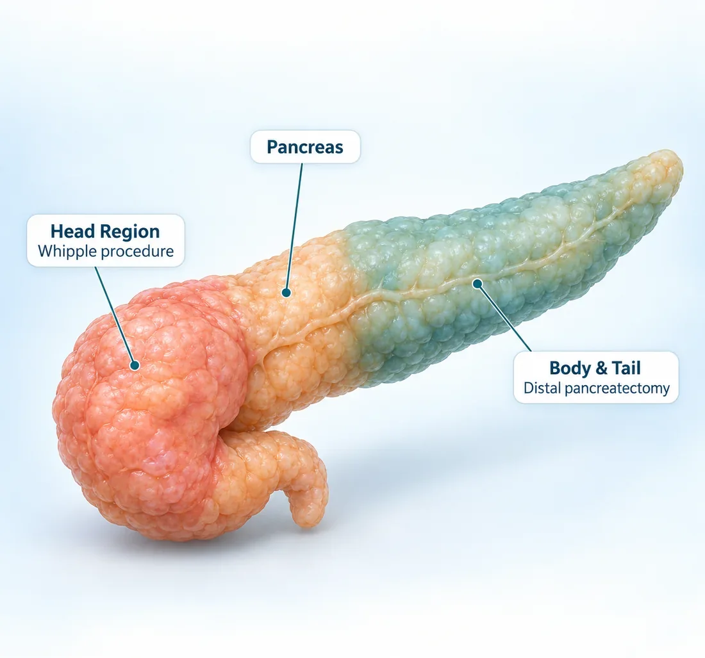

International Travelling Fellowship (SEF)
Minimal access pancreatic surgery under the mentorship of Prof. Yuichi Nagakawa
Focus Area Robotic Pancreatic Surgery
16Years of
Experience
Dr. Deeksha Kapoor
Dr. B. Ramamurthi National Gold Medal
DNB General Surgery — Batch of June 2014
Awarded for securing the highest marks nationally in the Diplomate of National Board examinations, marking a benchmark of academic and surgical excellence.
Advitya Healthcares · Kolkata & Baruipur
Already diagnosed, or told you need surgery? Get a second opinion from Dr. Deeksha Kapoor before you decide.
KolkataBaruipur
Consultation venue and timings confirmed at the time of booking
WhatsApp UsPancreatic cancer surgery at Advitya Healthcares is delivered within PancreaCare, our centre of excellence for pancreatic, liver and gastrointestinal surgery. The team evaluates and treats pancreatic adenocarcinoma, periampullary cancers, neuroendocrine tumours and cystic tumours of the pancreas, with consultations available in Kolkata and Baruipur.
Not every pancreatic tumour can be removed, and an honest assessment of that is the most important part of the first consultation. Whether surgery is possible — and whether a Whipple procedure, distal pancreatectomy or another operation is suitable — is decided on staging scans, your general fitness and a multidisciplinary review.
The surgical team is led by Dr. Deeksha Kapoor, a pancreato-biliary and gastrointestinal surgeon with training in advanced surgical oncology and minimally invasive surgery from institutions in India, Japan, Germany and France. She leads the PancreaCare+ programme at Advitya Healthcares.
Before surgery you are told what the operation involves, whether chemotherapy is advised before or after it, and what recovery looks like — including nutrition, enzyme and blood sugar support. Jaundice with fever, severe abdominal pain, persistent vomiting or black stools needs emergency assessment the same day.
Surgical Gastroenterologist · HPB & GI Surgical Oncologist · CEO & Medical Head, Advitya Healthcares
Trained at the centres patients usually travel to Mumbai or Delhi for — and operating in Kolkata and Baruipur, so complex surgery does not have to mean leaving home.
Gained knowledge and achieved academic excellence at esteemed institutions
Aligned with global best practices through focused mentorships at world-renowned centers
Minimal access pancreatic surgery under the mentorship of Prof. Yuichi Nagakawa
Focus Area Robotic Pancreatic SurgeryDepartment of Pancreato-Biliary Surgery, Japanese Foundation of Cancer Research under the mentorship of Prof. Yosuke Inoue
Focus Area Surgery for Locally Advanced Pancreatic CancerDepartment of General Visceral & Transplant Surgery, University of Heidelberg under the mentorship(s) of Prof. Markus Buechler & Prof. Thilo Hackert
Focus Area Vascular Resections in Pancreatic SurgeryDepartment of HPB & Transplant Surgery, Beaujon Hospital under the mentorship(s) of Prof. Alain Sauvanet & Prof. Mickael Lesurtel
Focus Area Laparoscopic Pancreatic Surgery & Vascular ResectionsUnder the PancreaCare initiative, surgeons, medical oncologists and radiologists review complex cases together, so the plan, the operation and the recovery have more than one specialist watching over them.
Early symptoms are often vague. A symptom that persists deserves a proper medical evaluation rather than a wait.
Yellow eyes or skin with dark urine and pale stools, often without pain, and sometimes with itching.
Significant weight loss with no change in diet or activity.
A dull ache in the upper abdomen going through to the back, sometimes worse when lying flat.
Feeling full quickly, nausea, or losing interest in food over several weeks.
Diabetes appearing for the first time in later life, particularly together with weight loss.
Stools that are pale, oily and difficult to flush, suggesting fat is not being digested.
Jaundice with fever or shivering, severe abdominal pain, persistent vomiting, vomiting blood or black stools require urgent medical assessment.
Call +91 92112 21551Pancreatic tumours differ in the cells they start from and where they sit in the gland. Both shape how they are assessed and treated.
The most common pancreatic cancer, arising from the cells lining the pancreatic ducts. It most often starts in the head of the gland.
Discuss with our teamCancers of the ampulla of Vater, the lower bile duct or the duodenum, where bile and pancreatic juice drain. They often cause jaundice early.
Discuss with our teamArise from the hormone-producing cells of the pancreas. Many grow slowly, and some release hormones that cause specific symptoms.
Discuss with our teamIntraductal papillary mucinous neoplasms are mucin-producing growths inside the pancreatic ducts. Many are monitored; those with worrying features may need surgery.
Discuss with our teamCystic tumours usually found in the body or tail, more often in women. Because they can become cancerous, removal is often advised.
Discuss with our teamA rare tumour seen mostly in younger women. It is usually treated by surgical removal and generally has a good outlook.
Discuss with our teamThe type of a pancreatic tumour can only be confirmed by imaging and, where required, a biopsy.

Pancreatic cancer begins when cells in the pancreas grow out of control and form a tumour.
The pancreas lies deep in the upper abdomen, behind the stomach. It makes the enzymes that digest food and the hormones, including insulin, that control blood sugar.
The gland has a head, which sits in the loop of the duodenum, a body across the midline and a tail reaching the spleen. A tumour in the head can press on the bile duct and cause jaundice relatively early; one in the body or tail often grows longer before it causes symptoms.
Because the pancreas lies so deep, a tumour can grow without being felt or seen, and early symptoms such as indigestion or back ache overlap with common conditions.
The major blood vessels supplying the intestine and the liver run immediately behind the pancreas. Whether a tumour is separable from them decides whether an operation is possible, and how it would be done.
Diagnosis and treatment should be based on clinical evaluation, staging imaging and, where required, a biopsy.
One question runs through the whole work-up: can the tumour be separated from the blood vessels behind the pancreas?
Symptoms, their timeline, new diabetes, family history and previous reports are reviewed.
Liver function tests and, where relevant, the CA 19-9 tumour marker as one piece of the picture.
A dedicated contrast CT shows the tumour and, critically, its relationship to the surrounding blood vessels.
Used where more detail is needed on the ducts, on cysts or on small lesions in the liver.
Endoscopic ultrasound gives a close view and allows a biopsy where tissue confirmation is needed.
The disease is classed as resectable, borderline resectable or locally advanced, which decides what is offered first.
Which tests apply to you is a clinical decision made after examination and a review of your existing reports.
Specialist pancreatic cancer care with a patient-first approach.
Pancreatic cancer evaluation and surgery within a dedicated pancreato-biliary and HPB surgical practice.
Surgery, chemotherapy and the order they come in are planned together with oncology and radiology.
Whipple procedure, distal and total pancreatectomy, vascular resection and minimally invasive surgery in selected patients.
Pancreatic protocol CT, MRI, EUS and blood tests reviewed together before treatment is decided.
Enzyme, blood sugar and dietary support planned as part of the operation, not after it.
Access consultation through Advitya Healthcares locations in Kolkata and Baruipur.
Where surgery is appropriate, the operation is chosen by the part of the gland involved and by the blood vessels around it.
Pancreaticoduodenectomy, for tumours of the head of the pancreas and the structures beside it. The head of the pancreas is removed with the duodenum, gallbladder, lower bile duct and nearby lymph nodes, then the remaining pancreas, bile duct and stomach are joined to the small intestine.
For tumours of the body or tail. The left part of the pancreas is removed, usually with the spleen when cancer is suspected, so that the lymph nodes beside it are cleared as well.
Removal of the whole pancreas, considered when disease involves the entire gland or cannot be cleared by a partial operation.
Where a tumour touches the portal or superior mesenteric vein, a segment of the vein may be removed with the tumour and reconstructed, so that a clear margin can be achieved.
Some patients have chemotherapy before surgery and are reassessed; chemotherapy after surgery is commonly part of the plan. Where an operation is not appropriate, treatment focuses on controlling the disease and relieving symptoms. The approach is decided after staging and clinical evaluation.
Your symptoms, medical history and existing reports are reviewed.
CT, EUS and blood tests establish the stage and the vessels involved.
Surgery first, or chemotherapy first with reassessment, is decided with you.
The planned operation is carried out after nutrition and fitness preparation.
A monitored stay, early walking and a gradual return to eating.
Pathology review, chemotherapy if advised, enzymes, blood sugar and surveillance.
Major surgery means a hospital stay of several days. This is how health insurance works at Advitya, so cost is not left as a guess.
Where your insurance company or TPA is accepted by the hospital, the covered amount is settled directly with them after approval. Charges your policy does not cover are paid by the patient.
Tell the hospital at admission that you have health insurance. A pre-authorisation request is sent to your insurer or TPA, and the covered amount is settled once they approve it.
Advitya Hospital Baruipur, with an ICU offering critical care and ventilator support, and 24×7 emergency cover. Consultations are also held at Advitya Kolkata — PancreaCare, Rajdanga Main Road.
Check your policy before admission. The list of accepted insurance companies and TPA partners will be published once confirmed. To check yours now, call the hospital desk.
Call +91 92112 21552Consultation, surgery and follow-up organised around the patient.
Pancreatic cancer care delivered by a specialist pancreato-biliary surgical team.
Consultation, theatre and diagnostic facilities used for planned surgical care.
Time to discuss your scans, reports, treatment options and recovery.
Consultations available in Kolkata and Baruipur.
General information only. Advice for your own condition comes from your consultation.
Early symptoms are often vague. Yellowing of the eyes or skin without pain, unexplained weight loss, a dull upper abdominal pain that goes through to the back, loss of appetite, new diabetes in later life and pale, greasy stools are the most common. These have many other causes, but any of them that persists deserves medical evaluation.
Surgery offers the best chance of long-term control when the tumour can be removed completely. Whether that is possible depends on the stage, the position of the tumour, whether the nearby blood vessels are involved and your fitness for a major operation. Chemotherapy is usually part of the plan as well.
The Whipple procedure (pancreaticoduodenectomy) is the operation used for tumours in the head of the pancreas and the structures beside it. The head of the pancreas is removed together with the duodenum, gallbladder, lower bile duct and nearby lymph nodes, and the remaining pancreas, bile duct and stomach are then joined to the small intestine.
No. Tumours of the body or tail are treated with a distal pancreatectomy, and some patients are advised chemotherapy first or treatment that controls the disease and relieves symptoms instead of an operation. The decision is made after staging and a clinical assessment.
When a tumour is close to the major blood vessels (borderline resectable), chemotherapy first can shrink the disease and treat cells that may have spread, which can improve what an operation achieves. The tumour is re-scanned afterwards to decide whether surgery is appropriate.
Minimally invasive and robotic approaches may be suitable for selected patients, particularly for some distal pancreatectomies. Suitability depends on the tumour, its relationship to the blood vessels and your previous surgery, and is decided after assessment.
Pancreatic surgery is major surgery. The hospital stay is usually measured in days to weeks and the full recovery in weeks to months, depending on the operation and your general health. Your surgeon will give you a timeline that applies to you.
Some patients need pancreatic enzyme supplements with meals to help digestion, and blood sugar is monitored because the pancreas also makes insulin. After a total pancreatectomy, lifelong insulin and enzyme replacement are needed. Your team plans this with you.
Jaundice with fever or shivering, severe abdominal pain, persistent vomiting, vomiting blood or black stools need urgent medical assessment. Go to your nearest emergency department the same day.
Talk to the Advitya Healthcares surgical team about your scans, your diagnosis and the treatment options available to you.
A few details and our team will call you back to confirm.
We have received your appointment request. Our team will call you back to confirm the venue and slot.
For an emergency, call +91 92112 21553 now.